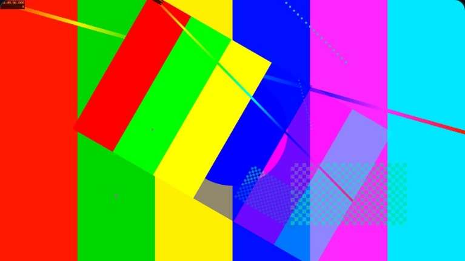
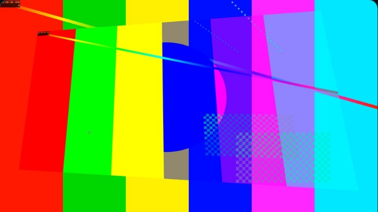
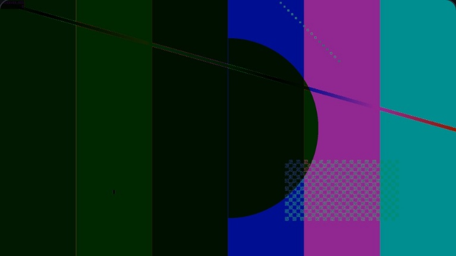
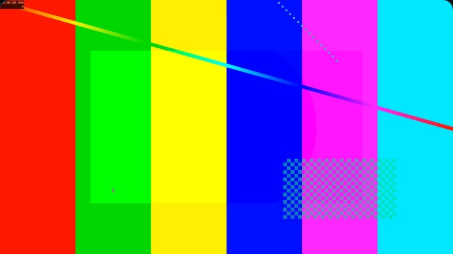
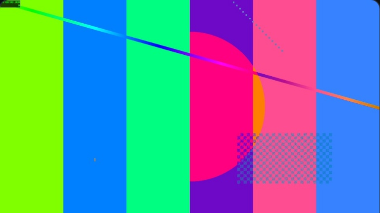
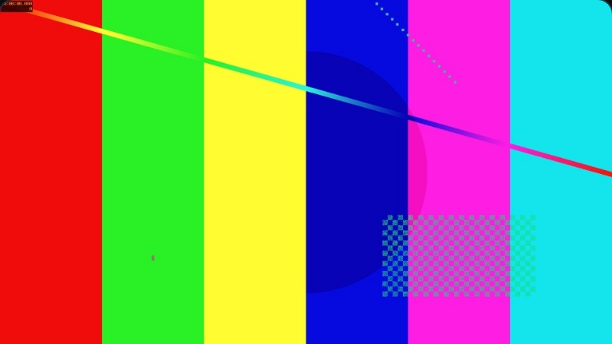

21
+9,241
45
8
23
2

MIXER 1-10 ROTATION 30

MIXER 1-10 PERSPECTIVE …

MIXER 1-10 BLEND DIFFERENCE

MIXER 1-10 CROP 0.2 0.2 0.8 0.8

MIXER 1-10 HUESHIFT 90

MIXER 1-10 CDL 1.1 1.0 0.9 …
CasparCG Server 2.6
FFmpeg 8.1
CEF 150
VideoToolbox
GLFW 3.5.1
OpenJPEG 2.5.4
KosmicKrisp
MoltenVK
Metal · Apple silicon
FFmpeg · yadif_videotoolbox
—
1,507
→
3
1/150
→
0/150
CPU
→
VideoToolbox
45,060
/ 0